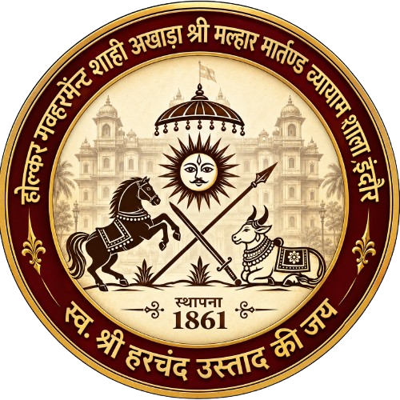
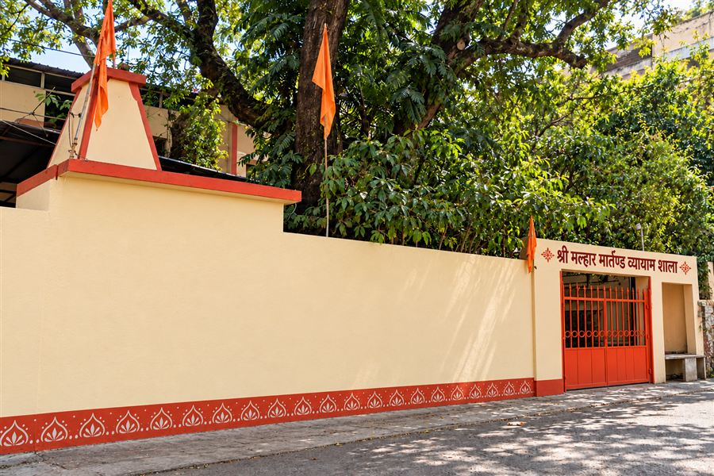

हनुमान जन्मोत्सवHanuman Janmotsav
शक्ति, साहस, अनुशासन और समर्पण के प्रतीक हनुमान जी का जन्मोत्सव।The birth anniversary of Lord Hanuman, symbol of strength, courage, discipline and dedication.

रियासतकालीन गौरवशाली परंपराA Glorious Legacy of the Princely Era
श्री मल्हार मार्तण्ड व्यायाम शाला इंदौर, मध्य प्रदेश का एक ऐतिहासिक पारंपरिक अखाड़ा है, जिसका स्थापना वर्ष 1861 माना जाता है। शहर की कुश्ती और व्यायाम परंपराओं में रचा-बसा यह अखाड़ा शक्ति, अनुशासन, समर्पण और अटूट गुरु–शिष्य परंपरा की विरासत का प्रतीक है।Shri Malhar Martand Vyayam Shala is a historic traditional akhada in Indore, Madhya Pradesh, with a reported founding year of 1861. Rooted in the city's wrestling and physical-culture traditions, it represents a legacy of strength, discipline, dedication, and the enduring Guru–Shishya tradition.

पीढ़ी-दर-पीढ़ी चली आ रही गुरु–शिष्य परंपरा, जिसने अखाड़े की पहचान गढ़ी।A Guru–Shishya tradition passed down through generations, shaping the identity of the akhada.
आस्था, परंपरा और शौर्य के उत्सव, जिनमें अखाड़ा हर वर्ष सहभागिता करता है।Celebrations of faith, tradition and valour that the akhada takes part in every year.
शक्ति, साहस, अनुशासन और समर्पण के प्रतीक हनुमान जी का जन्मोत्सव।The birth anniversary of Lord Hanuman, symbol of strength, courage, discipline and dedication.
गुरु–शिष्य परंपरा को नमन – उस्तादों का पूजन एवं सम्मान।Honouring the Guru–Shishya tradition – reverence and respect for the Ustads.
लोकमाता देवी अहिल्याबाई होलकर की स्मृति में होल्कर विरासत का उत्सव।A celebration of the Holkar heritage in memory of Lokmata Devi Ahilyabai Holkar.
जल झूलनी एकादशी पर शोभायात्रा, शस्त्रकला एवं पारंपरिक प्रस्तुतियाँ।Shobha yatra, shastra kala and traditional performances on Jal Jhulni Ekadashi.
1924 से इंदौर के प्रसिद्ध अनंत चतुर्दशी चल समारोह में अखाड़े की ऐतिहासिक सहभागिता।The akhada's historic part in Indore's renowned Anant Chaturdashi procession since 1924.
35, जुना तुकोगंज, हैमिल्टन रोड, इंदौर, मध्य प्रदेश35, Juna Tukoganj, Hamilton Road, Indore, Madhya Pradesh